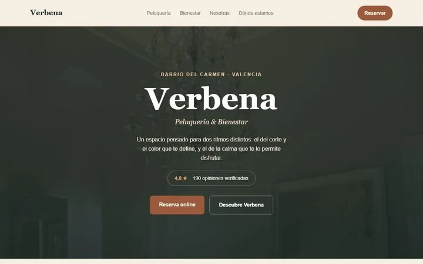
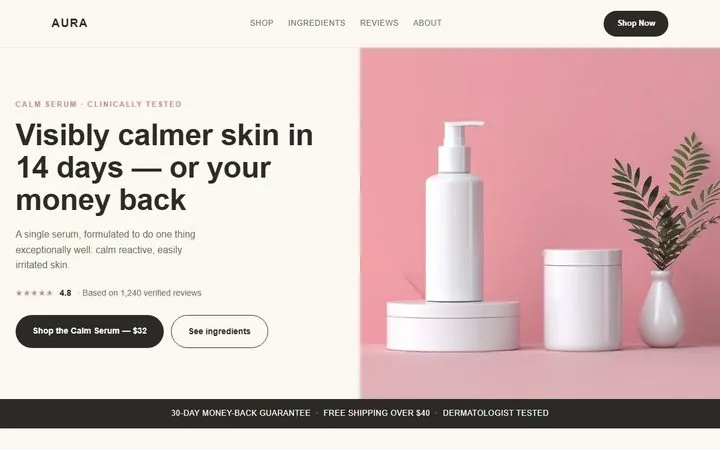
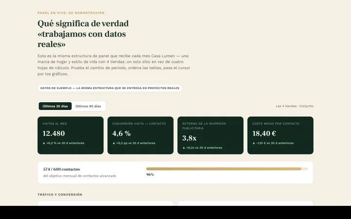
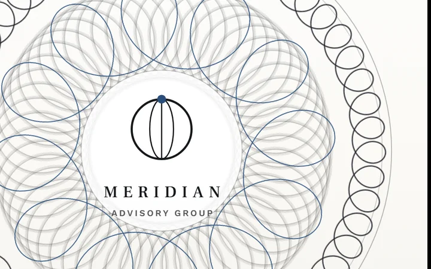
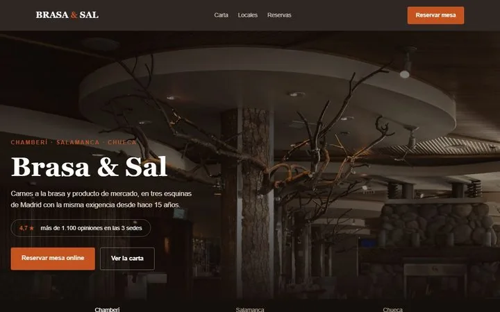
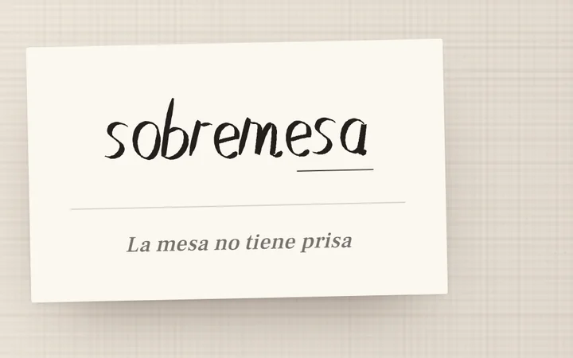

Portfolio
Seis problemas, seis respuestas
- 01La cortina que se arrastraVerbena
- 02El frasco que se giraAura
- 03El panel dibujado a manoCasa Lumen
- 04El rastroMeridian
- 05El mapa de solapeBrasa & Sal
- 06La semanaSobremesa
Qué tipo de proyecto
Viendo los 6 proyectos

Negocio local · Belleza
Un negocio al que quiere su barrio, invisible fuera de él
Verbena — peluquería y bienestar, El Carmen, Valencia
Ver el caso

Tienda online · Cosmética
De una página de producto a una tienda que se puede tocar
Aura Skincare — venta directa
Ver el caso

Proyecto funcional · Retail
Cuatro tiendas, cuatro hojas de cálculo y ninguna decisión compartida
Casa Lumen — cadena de decoración, 4 locales y online
Ver el caso

Corporativa B2B · Consultoría
Doce años de reputación que la web deshacía antes de la primera llamada
Meridian Advisory Group — consultoría de estrategia
Ver el caso

Varios locales · Restauración
Tres restaurantes excelentes, compitiendo entre ellos sin querer
Brasa & Sal — grupo con tres locales en Madrid
Ver el caso

Solo contenido · Restauración
Lleno los viernes, vacío el resto de la semana
Sobremesa — restaurante de barrio, La Latina
Ver el caso
Ninguno de los seis usa esa capacidad — y eso también es una respuesta.
¿Un problema parecido?
Empezamos mirando lo tuyo, gratis
Miramos tu web, tu ficha de Google y tus reseñas desde fuera, y te contamos qué vemos en veinte minutos. Sin presentación comercial.